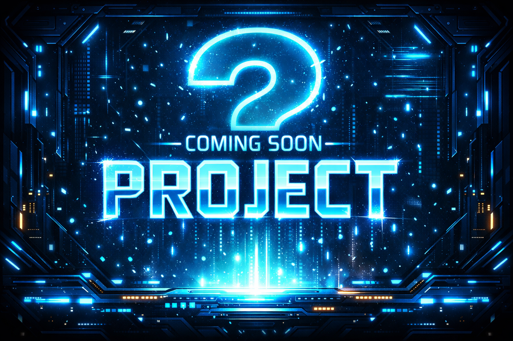

O mnie
Cześć! Jestem Szymson Gniadson, student informatyki na Akademii Tarnowskiej i pasjonat programowania od 6 lat.
Tworzę aplikacje webowe, narzędzia developerskie i gry. Biegle posługuję się JavaScript / TypeScript, a także C/C++ i Pythonem. Kocham projekty, które łączą logikę, kreatywność i efekt WOW.
Moje projekty to m.in.: • aplikacja do tworzenia schematów blokowych • gra Ultimate Tic Tac Toe • Guess The Number 2
Umiejętności
JavaScript / TypeScript
HTML5 / CSS3
C / C++
Python
Gry i algorytmy
Projekty webowe
JavaScript / TypeScript
HTML5 / CSS3
C / C++
Python
Gry i algorytmy
Projekty webowe
Doświadczenie
6 lat programowania
Tworzenie aplikacji webowych, gier, narzędzi developerskich i projektów akademickich.
Projekty akademickie i własne
Aplikacja do schematów blokowych, Ultimate Tic Tac Toe, Guess The Number 2.
Technologie
JavaScript / TypeScript, HTML5, CSS3, C/C++, Python.
Projekty
